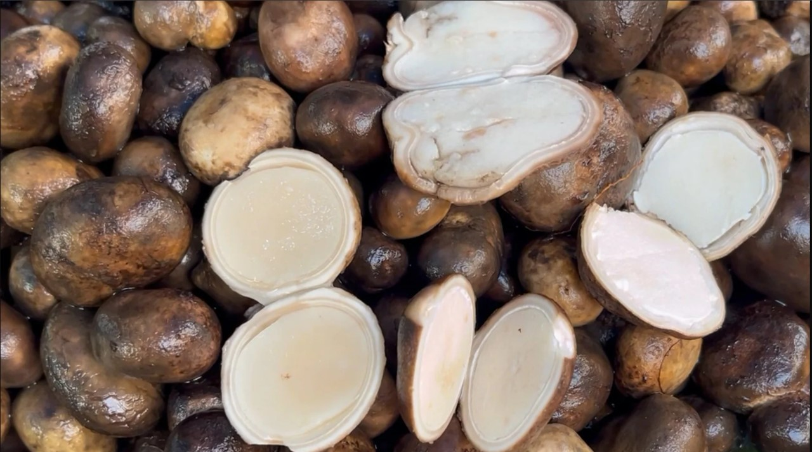

|  |
เห็ดเผาะ หรือ เห็ดถอบคุณค่าทางโภชนาการเห็ดเผาะ 100 กรัม ให้พลังงาน 47 กิโลแคลอรี่ ประกอบด้วย น้ำ 85.7% โปรตีน 2.14% ไขมัน 0.39% คาร์โบไฮเดรต 8.40% แคลเซียม 0.038% ฟอสฟอรัส 0.083% ธาตุเหล็ก 0.004% วิตามิน 0.012%ไปยังเว็บไซต์แหล่งข้อมูล |
| ชื่อวิทยาศาสตร์: | Astraeus hygrometricus |
|---|---|
| ชั้น: | Agaricomycetes |
| อาณาจักร: | Fungi |
| วงศ์: | Diplocystaceae |
| สกุล: | Astraeus |
| สปีชีส์: | A. hygrometricus |
| หมวด: | Basidiomycota |